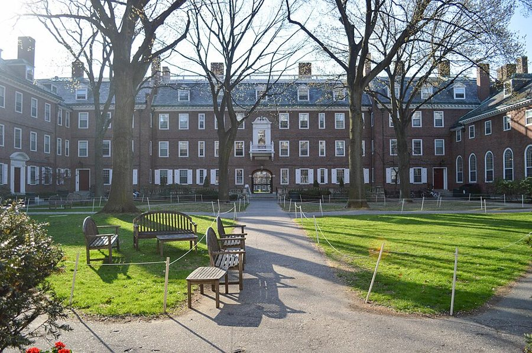
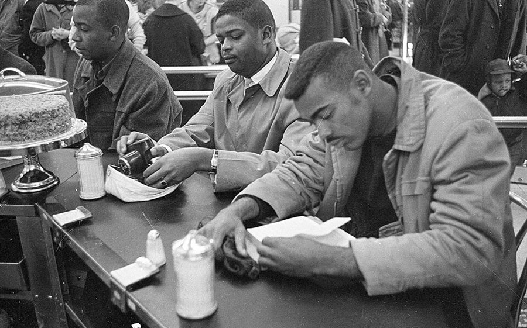

这一章在做什么
接着上一页的华盛顿夜校：1955 年秋他二十五岁，押上全部积蓄转进哈佛，期中差点被请走。三年后去哥大，再去芝加哥；到 1961 年三十岁，博士的要求还差一大半。
这一页换了三所学校，也写到他的想法从哪里开始松动。读的时候分两条线：学期里谁教了他什么，暑假在华盛顿看见了什么。
1956 1957 1958 1959 1960 1961
哈佛 · 本科
哥大
芝加哥 · 博士生
1955 秋转入，1958 毕业
硕士 9 个月
1959.10 起，住校两年
华盛顿 华盛顿 纽约 华盛顿 华盛顿
政府职员 卫生署打字 暑期课 卫生署打字 劳工部实习
1960.3 头一篇论文刊出
1960 年底 圣路易斯年会
本站示意图。上面一排是学期，下面的小块是五个暑假。粗体的那个暑假，是他自己说改变了想法的地方。
出场的人
这一页的教授都是真名实姓的经济学家，名字后面还会出现；室友和房东是只有名字的普通人。
Nort 和 Ralph Nort = Norton，都是男生 哈佛的两个室友，也是转学生，一个来自加州理工，一个来自麻省理工。两人的读书习惯成了他的样板。
Arthur Smithies /ˈsmɪθiz/ 哈佛教授，财政政策专家，他本科毕业论文的导师。澳大利亚出生。
Paul Sweezy /ˈswiːzi/ 当时美国最有名的马克思主义经济学家。没有真正出场，只是被提到，而作者谢绝了引见。
Mrs. Nash 一家 弟弟 Sam，女儿 Sandra 华盛顿的房东，家里的朋友。只在第 14 节出现。她叫作者 Tommy。
Arthur F. Burns /bɜːrnz/ 哥大教授，他硕士论文的导师。此前当过艾森豪威尔总统的经济顾问委员会主席，后来（1970–1978）是美联储主席。
George J. Stigler /ˈstɪɡlər/ 他最想跟的老师，教经济思想史。说话冷，嘴快。1982 年获诺贝尔经济学奖。
Milton Friedman /ˈfriːdmən/ 他在芝加哥的指导教授，教价格理论，对学生很严。1976 年获诺贝尔经济学奖。
Mary Frances、Charles 亲姐姐、亲大哥 都住华盛顿。Charles 给他攒了一台没有外壳的收音机；Mary Frances 打来一个电话。
Jimmy Birdie 和 Lacy 的儿子 第 2 章里出生的那个孩子，作者教过他骑车。这里只出现在一个电话里。
几个容易听混的名字。 两位导师都叫 Arthur：哈佛的是 Smithies，哥大的是 Burns。第 20 节的 William James 和 Charles Sanders Peirce 是 19 世纪的哲学家，和他的哥哥 William、Charles 无关。Peirce 读 /pɜːrs/，和 purse 同音，不读「皮尔斯」。
背景：作者默认你知道的事
学位的三级台阶
B.A. 学士 本科（college）
M.A. 硕士 研究生院第一步
Ph.D. 博士 四关都过才给学位
荣誉分三等：
cum laude
magna cum laude
summa cum laude
一年上下
修课 + 硕士论文
① residence 住校修课 1961 满
② comprehensive exams 还没考
③ 外语考试 还没过
④ dissertation 博士论文 还没写
哈佛 1958 哥大 1959 芝加哥 1959 起
本站示意图。右边一列是他 1961 年离校时的进度。thesis 在这本书里指本科和硕士的论文，dissertation 专指博士论文。
美国的博士不是「读满几年就毕业」。residence requirement 只规定必须注册在校的最短时间，满了以后可以离校工作，其余几关人不在学校也能补，书里叫 in absentia 。很多人就这样拖上多年。第 26 节的那笔账要这样读。
哈佛：House、成绩和拉丁文荣誉

哈佛 Kirkland House 的院子，2015 年春。作者住的 Apley Court 归这个 House 管，三餐在这里吃，挨训也是到这里来。
Ywu01，CC BY-SA 3.0，维基共享资源 哈佛的高年级本科生分住在几个 House 里，每个 House 有自己的食堂和一位由教授担任的 Housemaster，管学生的生活和学业。成绩是字母：A 最好，D 勉强及格，F 不及格。
毕业荣誉用拉丁文，分三等（见上图）。在当时的哈佛，够格申请荣誉看平均成绩，定哪一等看毕业论文。
1950 年代的马克思主义者
他上一章说过，十几岁就自己找马克思来读。《资本论》（Capital ）共三卷，第一卷 1867 年出版，后两卷是马克思去世后由恩格斯整理的，1885 和 1894 年出版。
1950 年代的美国刚经过麦卡锡时期，公开自称马克思主义者的人很少。Sweezy 是例外：1942 年出过一本讲马克思经济学的名著，1949 年参与创办左翼杂志 Monthly Review 。
芝加哥大学经济系
弗里德曼，1976 年 10 月获诺贝尔奖时的新闻照。教作者是十六七年前的事。UPI，公有领域，维基共享资源
从 Midway 草地看芝加哥大学主校区的塔楼。Crimson3981，公有领域，维基共享资源
这个系以相信市场、怀疑政府干预出名，后来被叫作「芝加哥学派」。弗里德曼 1946 年起在这里任教。斯蒂格勒原在哥大，1958 年转来。
第 20 节那篇文章的作者哈耶克（Friedrich Hayek）是奥地利出生的经济学家，文章发表于 1945 年，他 1974 年获诺贝尔奖。芝加哥大学一年分几个 quarter（学季），不是两个学期。
1960 年：静坐，和「边界州」

1960 年 2 月 10 日，北卡罗来纳州达勒姆，Woolworth 商店午餐柜台前的静坐者。作者第 21 节那封信写于次月。
State Archives of North Carolina，公有领域，维基共享资源 1960 年 2 月 1 日，北卡罗来纳州格林斯伯勒的四个黑人大学生在只招待白人的午餐柜台坐下不走，几周内各地学生跟着做，这就是 sit-in。
lunch counter 是百货店里卖简餐的长柜台。圣路易斯在密苏里州，南北战争时是蓄奴而没有脱离联邦的 border state，1960 年隔离不如南方腹地严，也没有消失。
最低工资和波多黎各的糖
最低工资逐年上调，糖业雇的人逐年减少
雇主的解释 工资定得太高，种得少了
工会的解释 连年飓风，毁了庄稼
能分出对错的数字 飓风来之前，地里有多少甘蔗
本站示意图：第 24 节的那个问题。数字后来有没有拿到，书里有交代。
美国联邦最低工资始于 1938 年的《公平劳动标准法》。波多黎各是美国属地，那里不用全国统一的数，由劳工部主持的委员会一个行业一个行业地定。
斯蒂格勒 1946 年发表过一篇文章，主张最低工资会让一部分低薪工人失业。作者 1960 年夏天去劳工部实习时还不信这个。
留个记号：后面还会回来
这一页里作者四次直接说了「当时不觉得，后来才明白」或「多年后才知道」。先记下。
哈耶克的那篇文章 第 20 节 弗里德曼课上布置的读物。他说当时没看出要紧，将近二十年后才明白，还因此写了一本书。书名他在这里就给了。
是方程还是恒等式 第 20 节 课上听烦了的一句问话，加上皮尔斯的一段话。他说自己后来教书，把那段话印在课程大纲第一页。
对政府项目的信心 第 24 节 他用的词是「开始」和「渐渐」。这个夏天之后他仍然是马克思主义者；变到哪一步、用了多久，留给后面几章。
Jimmy 葬礼上的花 第 23 节 他说很多年后才知道一件事，也才知道纽约那一家当时过得怎样。和第 3 章他离家的那一段对着读。
词与短语
词条按书里出现的顺序排，小标题是原书用 • • • 隔开的各节。斜体小字是那句话里的几个词，在 Kindle 里搜它就能跳到那一句。单个的生词长按就能查，这里收的主要是词典帮不上忙的。
第 12 节 · 两个 D，两个 F
in the general stream of things
… in the general stream of things. …
身在校园的日常里，不做局外人
stream 是水流。住在校外，课外的讨论、消息都赶不上。
transfer student
… two other transfer students living in …
转学生
在别的大学读过一两年再转进来的。他从霍华德转来，所以三年就毕业。
verbal test scores
… My verbal test scores were a …
入学考试里语文部分的分数
verbal 不是「口头的」。College Board 的考试分 verbal（词汇、阅读）和 math 两部分。
J.H.S. 43
… ninth grade at J.H.S. 43. …
第 43 初级中学
Junior High School 的缩写，纽约的公立学校按编号叫。第 2 章的那所学校。
lull into a false sense of security
… lulled me into a false sense …
让我误以为自己没问题
lull 本义是哄孩子入睡。固定搭配。
goof off
… to stop goofing off and get …
混日子，不干正事
美国口语。室友说的是实话，所以他才那么吃惊。
the standard load
… was the standard load at Harvard …
正常的选课量
load 是学生一学期背的课。上一页有 carrying an excessive load 。
Housemaster
… a meeting with the Housemaster. …
House 的主管教授
见背景。被他 summon（传唤）去，是出了事。
the bottom line
… but the bottom line was that …
归根结底的一句话
原指账本最底下那行盈亏数。
shape up or ship out
… have to shape up or ship …
要么改好，要么走人
美军的口头禅，押头韵，1950 年前后流行开来。下一句他把 ship out 拆开来当真用：没地方可去。
mortgaged
… was already mortgaged by a loan. …
已经押出去了
mortgage 本是房屋抵押贷款，这里说的是将来的收入已经预支。t 不发音，/ˈmɔːrɡɪdʒd/。
the wee hours
… into the wee hours of the …
后半夜，凌晨一两点到天亮前
wee = 很小的，指钟点数字小。
by the hour
… memorized German words by the hour, …
一连几个钟头地
这里不是「按小时计」。
slide rule
… myself to use a slide rule, …
计算尺
电子计算器出现以前，理工科学生人手一把的对数尺。
fall into place
… things began to fall into place …
一样样理顺了，对上了
a moral victory
… It was a moral victory after …
分数不好看，可是争回了一口气
不是「道德上的胜利」。指实际结果平平、精神上算赢。四个 C 本身不是好成绩。
magna cum laude
… still graduate magna cum laude from …
以优等成绩（三等荣誉里的第二等）
拉丁文，读 /ˌmæɡnə kʊm ˈlaʊdeɪ/。听书时这三个词连着出现三次，最后一次是全页最短的一段。
senior honors thesis
… about for my senior honors thesis. …
四年级申请荣誉学位的毕业论文
senior 是大四学生，不是「高级」。四个年级：freshman、sophomore、junior、senior。
know … backward and forward
… knew Marxism backward and forward, so …
滚瓜烂熟
make up my own mind
… and make up my own mind,” …
自己下判断
前半句的 interpreters 指解读马克思的学者，不是口译员。
Go to it
… right,” he said. “Go to it.” …
那就放手干吧
口语里的鼓励话。教授看明白了：这个学生是不要别人帮。
wasn’t about to
… I wasn’t about to have anything …
才不肯，决不会让
肯定式 be about to 是「正要」；否定式在美式口语里是「绝不打算」。后面的 attributed to = 被算到……头上。
第 13 节 · 在哈佛做人
cram for an exam
… seldom had to cram for an …
考前突击
cram 本义是硬塞。
cope with … rather than feel at home
… rather than feeling at home in …
应付得过去，但谈不上自在
at home = 自在。整句是往轻里说：他在社交上一直是外人。
class marshal
… them was selected as class marshal. …
毕业班选出来的学生代表
他举这个例子是说：别的黑人学生融入得很好，自己不合群不全是肤色的缘故。
patronizing
… to be intellectually patronizing seldom lasted …
居高临下、把你当小孩那样说话
和「赞助」无关。读 /ˈpeɪtrənaɪzɪŋ/。
you can’t tell him much
… man—but you can’t tell him much.” …
可你什么也教不了他
一句老俏皮话，玩 tell 的两个意思：前半句是「认得出」（哈佛人一眼就认得出），后半句是「告诉」。
leading questions
… to ask innocent-sounding leading questions, until …
一步步把人往某个结论上引的问题
不是「主要问题」。法庭用语：诱导性提问。
out on a limb
… himself way out on a limb—and …
把话说到没有退路的地步
limb 是树枝。人爬到枝梢上，他接着写去锯那根树枝，把成语当实景用。
Don’t give me too much credit
… “Don’t give me too much credit,” …
别把功劳都算我的
credit = 功劳。下半句的 raw material （原料）指那个人：是他自己底子就蠢。嘴上谦虚，其实更损。
第 14 节 · 暑假和一只熨斗
thrown in
… the G.I. Bill money thrown in. …
再搭上（也算进去）
买东西时白送的添头叫 thrown in。G.I. Bill 是给退伍军人付学费和生活补贴的法律，见上一页。
bare-bones
… back to a bare-bones level, in …
只剩最基本的
字面是光骨头。
room with
… and roomed with a family friend …
在……家租一间屋住
room 作动词。这一页开头的 rooming、第 23 节的 rooming 都是这个意思。
in his time
… plenty of brassieres in his time. …
这辈子（见得多了）
brassiere 是 bra 的全称，读 /brəˈzɪr/。
don’t have no use for
… You don’t have no use for …
根本用不着
双重否定表示否定，是口语，不是「并非用不着」。前面的 that old thing 里 old 不指旧，是随口的嫌弃。
第 15 节 · 离开哈佛
graduate school
… to continue on to graduate school. …
研究生院
graduate 作定语是「本科毕业以后的」。读硕士、博士都叫 graduate study。
a fall-back possibility
… was strictly a fall-back possibility. …
纯粹是保底的
strictly 这里是「纯粹、仅仅」。
we bright and good fellows
… if we bright and good fellows …
咱们这些又聪明又正派的人
他在学那种口气。句子的意思是反的：大家都信，不等于是真的。
not a moment too soon
… was not a moment too soon. …
早就该走了
字面「一刻也不嫌早」。
Commencement
… did not wait for Commencement day. …
毕业典礼
词根是「开始」，在美国大学里专指毕业典礼。
第 16 节 · 纽约的夏天
The Battery
… as far south as The Battery …
炮台公园
曼哈顿岛最南端。到哈莱姆差不多是整个岛的长度。
work on
… “My father is working on that …
在给……治疗
孩子的说法，像在说修一件东西。Roy Campanella 是布鲁克林道奇队的捕手，1958 年 1 月车祸瘫痪。
第 17 节 · 哥大
a rude shock
… was something of a rude shock. …
当头一棒
rude 这里是「猛然的、不客气的」，不是没礼貌。和前半句的 happy interlude（愉快的插曲）对着说。
study … under
… economic thought under Professor George J. …
跟着……（某位老师）学
under = 师从。这一页出现四次。
fellowship
… turned down a larger fellowship from …
研究生奖学金
不是「友谊」。本科生拿的叫 scholarship，研究生拿的叫 fellowship。turn down = 谢绝。
my first lesson in academic ethics
… my first lesson in academic ethics. …
学术界的「道德」给我上的第一课
反话。后面跟的两个短句是预告。
add insult to injury
… To add insult to injury, when …
伤了人还要再羞辱一句；更气人的是
vindicated in the course of time
… would be vindicated in the course …
日后被证明是对的
挖苦话：钱够不够是算术，用不着「等等看」。vindicate = 证明其正确。
come through with
… however, came through with some additional …
关键时候拿出了（钱）
audit
… to be taken as audits, rather …
旁听（不算学分，不给成绩）
不是「审计」。for credit = 算学分。
business cycle
… on Marx’s business cycle theory under …
经济周期
繁荣和衰退的交替。Burns 是这个题目上的头号专家。
I was in
… I was good, I was in, …
我就被录取了
in / out：进得去 / 进不去。所以他把另外两张推荐表扔了。
cold turkey
… my stomach medication, cold turkey, in …
一下子全停掉
原指戒毒、戒烟时不减量、直接断。
institutional affiliation
… I listed my institutional affiliation as …
（论文署名下面写的）所在单位
American Economic Review 是美国经济学会的会刊，这一行最重要的期刊之一。
第 18 节 · 满楼的医生
procedures, rather than results
… emphasis on procedures, rather than results. …
重程序，不重结果
这一节的关键词。他给 bureaucracy（官僚机构）下的定义。
第 19 节 · 弗里德曼的课
as they were that I was
… as they were that I was …
正如他们也清楚我是（马克思主义者）
省略句。补全是：我清楚这个系保守，他们同样清楚我是什么人。两边都知道，两边都不在乎。
question-begging
… quite unlike the question-begging smugness too …
把要证明的东西先当成前提的
beg the question 是逻辑术语，不是「引出问题」。smugness = 自以为是。呼应第 15 节他对哈佛的不满。
as fate would have it
… As fate would have it, Milton …
也是凑巧
一个马克思主义者，分到的指导教授偏偏是弗里德曼。
price theory
… took his course in price theory. …
价格理论
芝加哥对微观经济学的叫法，博士生的必修重课。
no-nonsense
… had a no-nonsense attitude toward students. …
不讲情面，不容含糊
make it my business to
… I made it my business to …
从此一定做到
和生意无关。thereafter = 从那以后。
technically
… Technically, it was not necessary to …
照规定的字面讲
不是「技术上」。言下之意：规定如此，实际上谁也不会一门都不过。
comprehensive exams
… There were comprehensive exams to take, …
博士资格综合考试
不考某一门课，考整个领域。
advance to candidacy
… in order to advance to candidacy …
取得博士候选人资格
过了综合考试才叫 candidate，才能动手写论文。
as well as the next fellow
… theory as well as the next …
不比谁差（我也一样喜欢）
the next fellow / man = 随便哪个人。
a steady diet of
… but a steady diet of nothing …
顿顿都是，天天只有
a little much
… abstractions became a little much. …
有点过头
往轻里说：他是受不了。
heavy-handed humor
… “I got your heavy-handed humor.” …
你那个使劲过猛的玩笑，我看懂了
got = 看懂了。heavy-handed = 手重、不巧。给了好分数，同时回敬一句。
第 20 节 · 当时没看懂的两样东西
fragmented knowledge
… utilizing the fragmented knowledge scattered among …
零零碎碎、分散在各人手里的知识
这一节的关键词。那篇文章的要点他用一句话交代了。
after the fact
… until long after the fact. …
事后
fact 这里是「已经发生的事」。法律用语。
be lost on
… importance was lost on me at …
我没领会到
不是「丢了」。主语是那件事，人在 on 后面。
a fine point
… like a mathematical fine point at …
细枝末节的讲究
fine = 细。
identity
… between an equation and an identity. …
恒等式
不是「身份」。方程只在某些条件下成立；恒等式因为定义如此，永远成立，所以也没说出任何新东西。
circular reasoning
… beliefs depend on such circular reasoning. …
循环论证
hobby
… cherished for years as his hobby …
念念不忘的那个想法
皮尔斯的原话，1878 年的英语。hobby 这里是老义，来自 hobby-horse：一个人老骑着不肯下来的话题。many a man = 很多人。
syllabus
… page of the syllabus of my …
课程大纲
读 /ˈsɪləbəs/。开学第一天发给学生的那几页纸。
第 21 节 · 一封信和一批剪报
Urban Renewal
… government “Urban Renewal” programs to dispossess …
「城市更新」
1949 年起的联邦计划，出钱让城市拆除旧街区重建。引号是作者加的：dispossess 是把人从住处赶走。
sit-in
… There were sit-ins at lunch counters …
静坐抗议
见背景。clippings 是剪报。Tuskegee 是亚拉巴马州的一所黑人大学，书里拼作 Tuskeegee。
panacea
… being regarded as a panacea, did …
包治百病的药
读 /ˌpænəˈsiːə/。这一句是倒装：Only in later years … did I begin 。他是说后来才有疑问，1960 年没有。
第 22 节 · 斯蒂格勒的信封
the winter quarter
… In the winter quarter, I finally …
冬季学季
quarter 这里是学季。芝加哥大学一学年分秋、冬、春几个学季。
industrial organization
… from Stigler was in industrial organization. …
产业组织（经济学的一个分支）
研究企业怎样竞争、垄断怎样形成，不是「工业的组织工作」。
take it in stride
… Stigler took it in stride, but …
不当回事，照常应对
stride 是步子：不乱步子。emboldened = 胆子壮了。
cross swords with
… made crossing swords with him a …
和他交锋
a hazardous undertaking （一桩危险的事）是书面大词说小事，自嘲。
economy drive
… one of those economy drives which …
一阵削减开支的运动
economy = 节省，drive = 运动。下一句把自己的奖学金叫 non-essential expenditure（非必要开支），带感叹号，是苦笑。
roll with the punches
… to roll with a lot of …
挨了打顺势卸力，不硬扛
拳击用语。书里说成 roll with a lot of punches 。
dead-pan
… Professor Stigler, dead-pan, reached into his …
面无表情
pan 是俚语里的脸。Ricardian = 李嘉图的。
drily
… at this sometime,” he said drily. …
不动声色地
dry 说的是冷面幽默。那句话本身也是往轻里说：「有空不妨看一眼」。
第 23 节 · 1960 年夏天
on a professional level
… job on a professional level, as …
专业人员一级的（工作）
和以前的打字员（clerical）相对。intern = 实习生。
pick up
… My social life also picked up. …
有了起色
social life 在这里主要指约会。
conversation piece
… it was invaluable as a conversation …
能引人开口聊天的摆设
反着夸：屋子布置得太难看，客人一进门就有话说。invaluable = 极有价值，不是「没价值」。
no small consideration
… summer—no small consideration in an era …
这可不是小事
「不小」= 很大。consideration = 要考虑的因素。
第 24 节 · 劳工部和波多黎各的糖
leave it at that
… And they left it at that. …
事情到此为止，不往下追了
前一句的 permanent … people 指部里的正式人员，和他这个暑期实习生相对。
through channels
… the way up through channels to …
按正式渠道一级一级地
Secretary of Labor 是劳工部长，Secretary 不是秘书。chain of command 是军队说法：上下级的指挥链。
file the request
… step. Let me file the request.” …
把申请正式递上去
file 作动词：提交（文件）。「千里之行」那句出自《老子》；1960 年肯尼迪正在竞选总统。
have yet to
… I have yet to receive an …
到现在还没有
「现在」是他写这本书的时候，四十年后。
overriding question
… may have been my overriding question, …
压倒一切的问题
后半句 not theirs ：那不是他们最关心的。incentive（动力、好处）是他后来书里的核心词。
be spared
… that I was spared the traumatic …
躲过了，没有受那份罪
spare 某人某事 = 让他免于。
conversions
… the traumatic conversions which some other …
（信仰的）彻底改换
本是宗教用语：改宗。指有些人一夜之间抛弃马克思主义。
第 25 节 · 李嘉图的一句话
the smiles of the great and powerful
… the smiles of the great and …
权贵的垂青
李嘉图（David Ricardo，1772–1823）是英国古典经济学家，这是他信里的话，19 世纪初的书面英语。骨架是 never think A a sufficient inducement to do B ：决不把 A 当成去做 B 的理由。
第 26 节 · 三十岁，圣路易斯
residence requirement
… to fulfill the residence requirement for …
必须在校注册修读的最短年限
不是「居住要求」。见背景。
in absentia
… to be completed in absentia. …
人不在校（的情况下）
拉丁文，读 /ˌɪn æbˈsenʃə/。
border state
… a border state city with Southern …
「边界州」
不是挨着国界的州。见背景。
let it be their problem
… to let it be their problem …
让他们去为难
buzzing 是后面那群人压低声音的议论。
could not be served
… I could not be served there. …
这里不能接待我
serve = 给（顾客）上菜。拒绝黑人顾客时的标准说法。
moral underpinnings
… but the moral underpinnings of it …
道义上的根基
underpinning 是房子底下的支撑。ambivalence = 拿不定主意。Deep South 指密西西比、亚拉巴马这些最南的州。
run the gamut
… ran the gamut from colleges to …
从……到……样样都有
gamut /ˈɡæmət/ 原是整个音阶。
did nothing to inspire confidence
… did nothing to inspire confidence. …
让人一点信心也提不起来
往轻里说。前半句的 black college 和上一页的霍华德连着读。
drifting along
… to spend some time drifting along, …
随波逐流地过一阵
下一章的章名就是这两个词。sort themselves out = 事情自己理出头绪。
值得停下来的句子
He died waiting for a doctor, in a building full of doctors.— 第 18 节，1959 年夏，公共卫生署门外。本站译：他死在等医生的时候，死在一座满是医生的楼里。
单独成段。逗号前后各一半，doctor 出现两次，一次是单数，一次是复数，中间只隔一个 building。前一段他用的全是被动句：被抬进去、被问、电话被打出去，没有一个人是主语，因为没有谁做错了事。
他先交代过这些同事人都很好。这一节只有一百多个词，放在去芝加哥之前；第 24 节劳工部的那场对话，是同一个意思的长版本。
Students are often in no position to judge “relevance” until long after the fact.— 第 20 节，说哈耶克那篇文章。本站译：一样东西「有没有用」，学生往往要到很久以后才有资格判断。
in no position to 是「没有条件去」，after the fact 是「事后」。relevance 加了引号。1960 年代后期美国校园里，学生要求课程 relevant，要和现实、和自己有关；本站的看法是，这个引号冲着那个口号。
这句话拿他自己做例子：一篇他读的时候没看出要紧的文章，将近二十年后成了他一本书的起点。第 7、8 章讲康奈尔时，这个带引号的词还会出现。
检查一下理解
先在心里答，再点开。答错的那题，回书里把那一节再读（或再听）一遍。
1. 哈佛第一学期四门课全是 C，他为什么说是一场「胜利」？ 因为期中是两个 D、两个 F，校方已经找他谈话。化学三次小考是两个 F 一个 D，期末几乎满分才拉到 C。moral victory 说的是从快要出局追回到及格，不是说 C 是好成绩。
2. Smithies 教授要介绍他认识 Sweezy，他为什么说不必？是看不上 Sweezy 吗？ 不是。他打算不看任何解读，自己把三卷《资本论》读完再下结论，不愿意论文里的东西被人说成是从哪位权威那里听来的。教授愣了一下，随后笑了，让他放手去做。
3. 他去哥大是冲着谁？后来在哪里上到了这个人的课？他头一篇论文署的单位说明什么？ 冲着 Stigler。到了哥大才知道 Stigler 已经去了芝加哥，所以他只在哥大读了九个月的硕士，导师是 Burns；第二年在芝加哥才上到 Stigler 的课。论文定稿时他还没去过芝加哥，却署了芝加哥大学，是因为对哥大有气。
4. 弗里德曼的课他得了 B，这算差吗？ 算全班最好的。那门课没有人得 A，B 只有两个。他自己起先也不知道，是另一个学生看见他的卷子吃了一惊才告诉他的。
5. 他是在芝加哥被老师们说服、放弃马克思主义的吗？ 不是。他明说自己在芝加哥期间一直是马克思主义者。让他开始动摇的是 1960 年夏天在劳工部的实习：他发现部里的人没有动力去弄清最低工资到底有没有帮到工人。他还强调这是一个慢慢变的过程的开头。
6. 圣路易斯的两家餐馆，他是特意去抗议隔离的吗？两次的结果一样吗？ 不是特意去的，第一次是饿了没多想就走了进去。第一家犹豫了一阵还是给他上了牛奶和苹果派；第二家的经理客气地说不能接待，他起身走了。他用这两件事说明的是：隔离还在，但人们心里已经不那么理直气壮了。